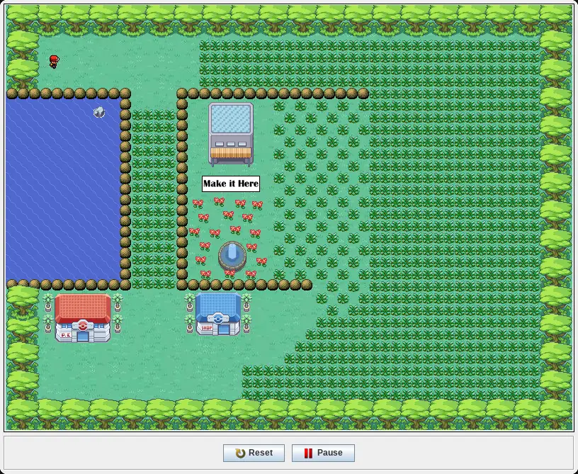

Pokémon: Green Foot Edition

The original Java game, about a 14 MB download. It needs a keyboard.
Controls
- Space
- Enter the game from the title screen
- ← →
- Pick your starter Pokémon, then Enter to choose it
- ← ↑ → ↓
- Walk around TrainingVille, diagonals too
- Shift
- Run
- Enter
- Clear a pop-up, or pick from the battle menu
- S
- Hold to see your stats
Logan Lovell and I made this as our final project for a computer programming class in 2012. Walk into the tall grass to meet a wild Pokémon; the battles only got as far as showing your moves and running away. Pokémon and its sprites belong to Nintendo and Game Freak; this is a fan game.
This is the original 2012 Java game, exported from Greenfoot, running in your browser as the applet it was built as. Java runs through CheerpJ by Leaning Technologies, which loads from its own servers when you press Play. On a phone it will load, but you'll need a keyboard to play.